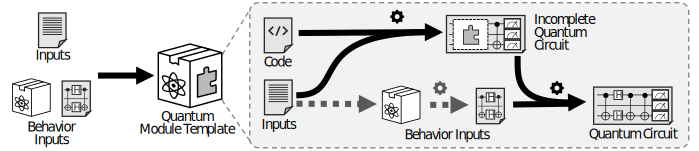

Quantum Computing Patterns
Quantum Module Template
Aliases: –
Tags: design
© IARIA, 2023
Intent
How can the implementation of the quantum part of a quantum algorithm be packaged for reuse when some of the behavior is determined later?
Context
Some quantum algorithms can be implemented in a reusable manner, but their behavior may be partially modified depending on the problem to which the algorithm is applied. For example, the Grover search algorithm [Grover 1996] contains an unspecified oracle. The information required for defining the concrete behavior of this oracle may not be available until a later point in time. Similar cases are algorithms like QAOA [Weigold et al. 2021], which do not specify a concrete ansatz to use. Thus, implementations of the quantum part of such algorithms, where the unspecified behavior can be integrated later, are required.
Forces
Quantum algorithms may intentionally leave parts of the behavior of the quantum part unspecified until a later point in time. For example, the Grover search [Grover 1996] uses an unspecified placeholder gate, as the specific function that marks the correct values cannot be known before it has been decided what to search for. In the case of QAOA, the choice of a suitable ansatz depends on information that is only available at runtime. However, for the algorithms to be executed, the missing behavior must be integrated before the execution of the quantum circuits on a quantum computer. Note, that similar situations can arise if the development of a quantum algorithm is split between different teams.
Integrating quantum behavior into an existing circuit requires a specification of the requirements an implementation has to fulfill to be integrated and function correctly. This includes the specification of the input qubits available, possible ancilla qubits, on which qubits and in what form the output is expected, and any other requirements or restrictions, e.g., on the creation of entanglement between quantum bits. Some of the restrictions, e.g., the number of available ancilla qubits, may additionally depend on the quantum computer used for execution, as a quantum computer with more qubits can allocate more ancilla qubits if the number of qubits used in the circuit is otherwise constant.
Solution
Implement the generic behavior of the quantum part of a quantum algorithm in a Quantum Module Template. This module accepts inputs, that define the unspecified behavior to be integrated into the final quantum circuit. The behavior can either be specified as a quantum circuit or as a Quantum Module that generates the required quantum circuit. This circuit then gets integrated by the Quantum Module Template into the main quantum circuit that represents the generic behavior.
To ensure that the behavior input, in form of a quantum circuit, can be integrated to correctly perform the operations it contains, the Quantum Module Template must include specifications in the documentation that can be used to build a compatible quantum circuit, as outlined in the pattern forces. This specification is mainly a contract that needs to be fulfilled by the quantum circuit serving as input for the template. Similar contracts, e.g., plugin contracts Marquardt 1999, are also used in classical software engineering.

The sketch shows the essential building blocks of a Quantum Module Template. The template requires two kinds of inputs: (i) the input values representing the problem to be solved as well as parameters affecting the circuit generation, as used in theQuantum Module, and (ii) behavior inputs partially specifying the behavior of the algorithm, provided in the form of a quantum circuit or a Quantum Module. Much like the Quantum Module, the Quantum Module Template uses the input values to generate a quantum circuit, which is still incomplete as it does not include the behavior from the behavior inputs yet. If the behavior inputs are provided in the form of a quantum module, this module is used to generate a quantum circuit from the inputs. Finally, the quantum circuit is integrated into the incomplete main circuit. However, implementations of the template are not limited to the exemplary steps shown here.
Result
The generic behavior of the quantum part of a quantum algorithm is implemented as Quantum Module Template that requires behavior inputs to generate an executable complete quantum circuit. The behavior inputs specify the parts of the algorithm’s behavior that cannot be known in advance. Thereby, their influence on the resulting quantum circuit can be significantly higher than with a Quantum Module. The behavior inputs must be compatible with the required input definitions of the template.
The integration of the behavior inputs can be done at design time if the behavior is provided as Quantum Module, since the Quantum Module generates the circuit based on the input values. Templates can be nested inside other templates to compose quantum circuits from Quantum Modules implementing higher level circuit functions. This facilitates the replacement of a part of a quantum circuit if that part should be generated by a new Quantum Module implementing an improved algorithm, e.g., a more efficient state preparation.
Examples
–
Related Patterns
A Quantum Module Template is a special kind of Quantum Module that additionally accepts behavior inputs, which are integrated into the generated quantum circuit. Quantum Module Templates can be used to integrate, e.g., Oracles and Initialization circuits into an executable quantum circuit allowing circuits to be built from smaller modules.
Quantum Module Template
can be used with
Quantum Module Template
can be used with
Quantum Module Template
is variation of
Quantum Module Template
can be used with
can be used with
Quantum Module Template
Known Uses
Various quantum algorithms, e.g., the algorithm of Deutsch [Collins et al. 1998] or the Grover search [Grover 1996], use an unspecified unitary gate as placeholder. Implementations of the generic behavior of these algorithms are available in Amazon Braket and Qiskit. These algorithms need oracle circuits to replace the placeholder gate, which are described in the Oracle pattern. The oracle replacement is described in [Weder et al. 2020] in an Oracle Expansion Task for workflows using the Quantum Modeling Extension. Generic parts of QAOA [Weigold et al. 2021], such as state preparation and the mixer operator are implemented in Amazon Braket and Qiskit and can be used by providing a quantum circuit encoding the cost function.